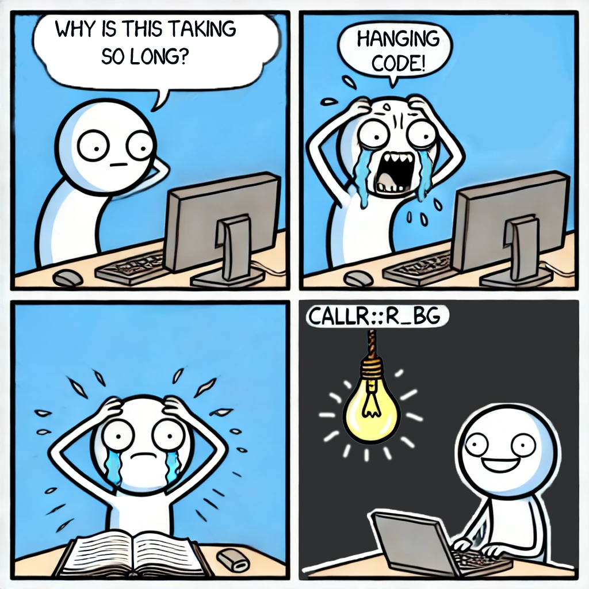
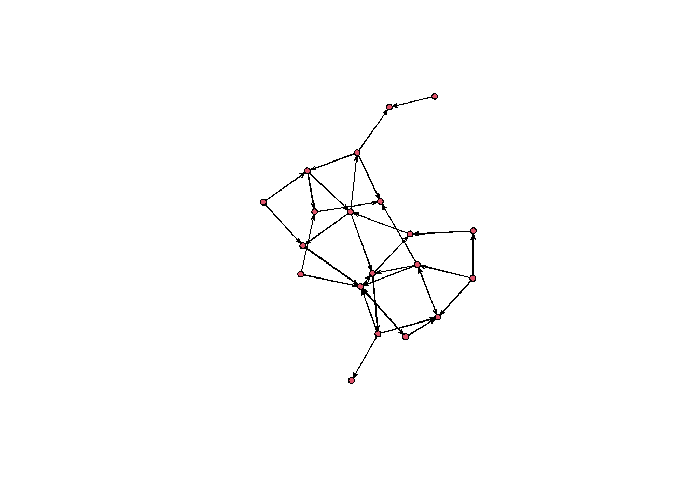

How to handle hanging R code using background processes.
R
tutorial
Author
Robert J.Bischoff
Published
July 23, 2024
I came across an intriguing/frustrating problem while conducting network analysis in R. The basic problem was that my code was hanging and I could find no way to completely avoid it. This post describes how I was able to solve the problem. Before continuing, I want to note that typically hanging code is a user error or sign of a bug, and it is best to solve the problem rather than brute force a solution. However, in some cases, you may need to run code that could hang and you want to stop it after a certain amount of time. This post describes how to do that.

Hanging Code
I wanted to run an Exponential Random Graph Model (ERGM) on a list of graphs. The problem was that the ergm function would hang on some graphs, and I couldn’t find a way to stop the code from running other than manually terminating it. This wouldn’t be a huge problem, if I wasn’t running the code for several thousand graphs. My first thought was to try a different package or maybe even do it in Python, but it turns out this is the only package that can calculate an ERGM and it isn’t available in Python. I also discovered that it was a known issue that the ergm function can hang under certain conditions.
The solution to the problem is found in the callr package. This package allows the user to create background R processes that can be supervised. The length of the background process can be monitored and it can be terminated if it exceeds that time frame. This solved my problem and saved me from manually running the code for each graph.
Below is example code demonstrating my process.
First, we’ll create a list of example graphs. We can create a graph like this.
set.seed(1010)library(statnet)
Loading required package: tergm
Loading required package: ergm
Loading required package: network
'network' 1.18.2 (2023-12-04), part of the Statnet Project
* 'news(package="network")' for changes since last version
* 'citation("network")' for citation information
* 'https://statnet.org' for help, support, and other information
'ergm' 4.6.0 (2023-12-17), part of the Statnet Project
* 'news(package="ergm")' for changes since last version
* 'citation("ergm")' for citation information
* 'https://statnet.org' for help, support, and other information
'ergm' 4 is a major update that introduces some backwards-incompatible
changes. Please type 'news(package="ergm")' for a list of major
changes.
Loading required package: networkDynamic
'networkDynamic' 0.11.4 (2023-12-10?), part of the Statnet Project
* 'news(package="networkDynamic")' for changes since last version
* 'citation("networkDynamic")' for citation information
* 'https://statnet.org' for help, support, and other information
Registered S3 method overwritten by 'tergm':
method from
simulate_formula.network ergm
'tergm' 4.2.0 (2023-05-30), part of the Statnet Project
* 'news(package="tergm")' for changes since last version
* 'citation("tergm")' for citation information
* 'https://statnet.org' for help, support, and other information
Attaching package: 'tergm'
The following object is masked from 'package:ergm':
snctrl
Loading required package: ergm.count
'ergm.count' 4.1.2 (2024-06-15), part of the Statnet Project
* 'news(package="ergm.count")' for changes since last version
* 'citation("ergm.count")' for citation information
* 'https://statnet.org' for help, support, and other information
Loading required package: sna
Loading required package: statnet.common
Attaching package: 'statnet.common'
The following object is masked from 'package:ergm':
snctrl
The following objects are masked from 'package:base':
attr, order
sna: Tools for Social Network Analysis
Version 2.7-2 created on 2023-12-05.
copyright (c) 2005, Carter T. Butts, University of California-Irvine
For citation information, type citation("sna").
Type help(package="sna") to get started.
Loading required package: tsna
'statnet' 2019.6 (2019-06-13), part of the Statnet Project
* 'news(package="statnet")' for changes since last version
* 'citation("statnet")' for citation information
* 'https://statnet.org' for help, support, and other information
unable to reach CRAN
g <-network(rgraph(20, tprob =0.1))plot(g)

We’ll use the lapply function to make a list of graphs.
Now we have graphs we can use with the ergm function. For simplicity, we’ll use a for loop to calculate the ergm for each graph. I’ve commented out the below code, because it will hang the R session.
# # don't run# for (graph in graphs){# ergm(graph ~ edges + triangles)# }
How do we handle this? Error handling like try or tryCatch won’t work because the R session is hanging not providing an error. What I want to do is stop the code from running if it takes longer than a certain time. We can do this by running the code in a background process. We can use the r_bg() function from the callr package. We can specify the time limit for the process to run. If the process takes longer than the time limit, the process will be killed.
To do this, we’ll need to create a function to supervise the background process.
run_and_monitor_processes <-function(bg, timeout =15) { start_times <-Sys.time()# Monitor processeswhile (TRUE) {Sys.sleep(1) # Check every second# Check the status of each processfor (name innames(bg)) {if (bg[[name]]$is_alive()) { run_time <-as.numeric(difftime(Sys.time(), start_times, units ="secs"))if (shiny::isTruthy(run_time > timeout)) { bg[[name]]$kill() # Kill process if it exceeds timeoutcat("Process", name, "killed after", run_time, "seconds\n") } } }# Exit the loop if all processes are doneif (all(!sapply(bg, function(p) p$is_alive()))) {break } }}
This function checks how long a process has been running and kills it if it exceeds the specified timeout. Once all processes are done, the function exits.
We also need to create a function to run the ERGM so we can pass in the arguments and load the statnet package. We are creating a separate background process that does not have access to the global environment. Results can be obtained from the background process using the get_result() function, but I find it safer when running longer code to just write the results to a file. This way the results are saved even if R crashes or something else interrupts the code.
Now we can run our run_ergm function for each graph without the process hanging. An additional advantage is that we are running the code in parallel, which can speed up the process.
library(callr)bg <<-list() # create a global list to store the background processesfor (i in1:length(graphs)){ graph <- graphs[[i]] nm <-names(graphs)[i] bg[[nm]] <-r_bg(run_ergm, args =list(graph = graph, dir = tmp_dir, i = i))}run_and_monitor_processes(bg)
Process b killed after 15.21355 seconds
Process h killed after 15.28757 seconds
Process i killed after 15.34911 seconds
Process j killed after 15.42225 seconds
# get resultssapply(bg, function(p) tryCatch(p$get_result(),error =function(e) return(NA)))
a b c d e f g h i j
"Done" NA "Done" "Done" "Done" "Done" "Done" NA NA NA
The results show that the code was able to run the ERGM for each graph without hanging, although we did not get results for two of the graphs because they timed out. Obviously, in a real use case we would want to return real results, but this simple example should allow you to adapt your code to solve hanging code problems.